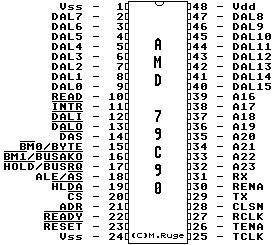

Previous
Next
TOC
Die Pinbelegung des Advanced Micro Devices AM7990PC

AMD 79C90
CMOS Local Area Network Controller for Ethernet (C-LANCE)
Compatible with Ethernet and IEEE802.3, 10Base5-Type A and 10Base2-
Type B, ,,Cheapernet'', 10BaseT
Easily interfaced with 80x86, 680x0, Am2900 and Z8000 Microprozesors
Onboard DMA and buffer management, 64 Byte Receive and 48 Byte
Transmit FiFo's
24 bit wide linear adressing (Bus Master Mode)
Network and packet error reporting
Back-to-back packet reception with as little as 0.5 us interframe
spacing
Diagnostic Routines
Kapitel Die Pinbelegung des Advanced Micro Devices AM7990PC, Seite 1